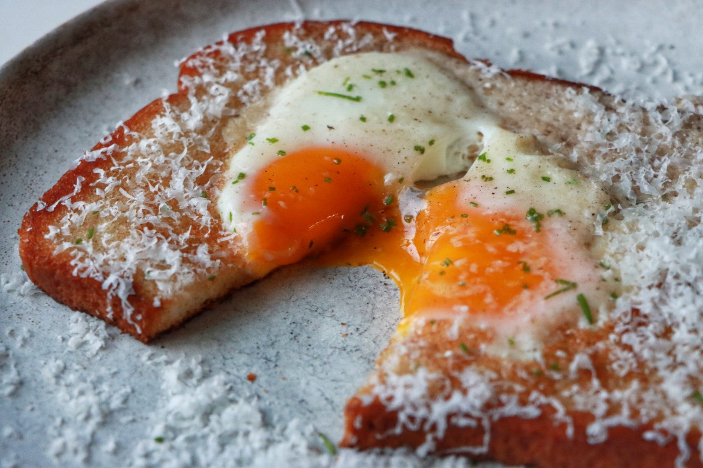

Eggs in the Hole
Eggs-in-the-Hole • Serves 1–2 • Breakfast / Snack

Eggs cooked into the center of butter-toasted bread, finished with Parmesan. It's three ingredients at heart—eggs, bread, butter—but reads like a brunch dish when you treat the details with care.
Ingredients
- Thick-cut bread (sourdough or country loaf)
- 2–4 eggs
- Unsalted butter
- Salt and freshly cracked black pepper
- A chunk of Parmesan, for microplaning
Optional
- Fresh chives or scallions, sliced
- Hot sauce or jam, on the side
Method
1. Cut the hole (keep the plug)
- Use a glass or cutter to punch a clean hole in the center of the bread.
- Save the cut-out—it cooks alongside and never goes to waste.
2. Butter the pan and edges
- Set a skillet over medium-low heat and melt a generous amount of butter.
- Don't let the butter brown; just let it foam.
- Lay the bread slice and the cut-out into the pan so they slowly absorb the butter.
- Brush melted butter along the inside edge of the cut-out; that inner rim needs fat to fry, not steam.
- Flip the bread so the toasted side is up before adding the egg.
3. Add the egg and season
- Crack an egg directly into the center hole.
- Season immediately with salt and freshly cracked black pepper.
- Lower the heat.
4. Steam, don't flip
- Add a small dash of water to the pan—enough to create steam, not a puddle.
- Cover the pan briefly so the whites set from gentle steam while the yolk stays soft.
- Lift the lid as needed so the bread doesn't steam and go soggy; you're balancing steam and crispness.
5. Finish in fresh butter
- Once the whites are set to your liking, uncover the pan.
- Add a small knob of fresh butter and let the bread finish toasting in the fat.
6. Shower with Parmesan
- Turn off the heat.
- While everything is still hot, microplane Parmesan generously over the top.
- The cheese should melt instantly and cling to the egg and bread.
Key points: Steam sets the egg without overcooking the yolk, buttered edges keep the bread crisp, and finishing in fresh butter plus Parmesan is what makes it feel restaurant-level, even though it's pantry food.